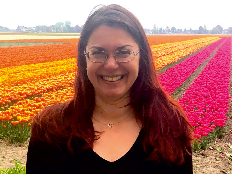
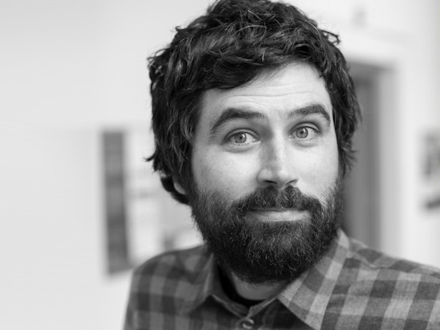
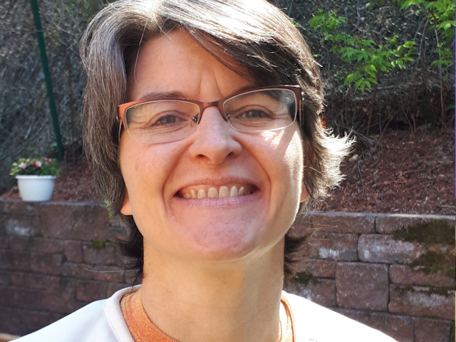

Dr. Paul Romer
Economic Activity in Three Dimensional Space

Dr. Thomas Kolbe
Distributed Digital Urban Twins:
The Inclusive Way

Dr. Mila Koeva
Photogrammetry and 3D Modelling
for People, Land and Urban Systems
Dr. Monika Sester
How perfect does
a 3D-city model have to be?

Dr. Hugo Ledoux
Maybe It’s Time To Do Something
With All Those 3D City Models?

Dr. Sylvie Daniel
The Depth of Bathymetry:
A Journey Through 3D Seafloor Mapping
Dr. Mike Tischler
United States'
3D Elevation Program
Dr. Aoife Gowen
Spectral imaging across multiple spatial and wavelength
scales for material characterisation
Dr. Anselm Haanen
The New Zealand 3D Cadastral Survey Data
Model and Exchange Project
Dr. Peter Buist
Utilising current and new
Galileo Services for 3D Survey